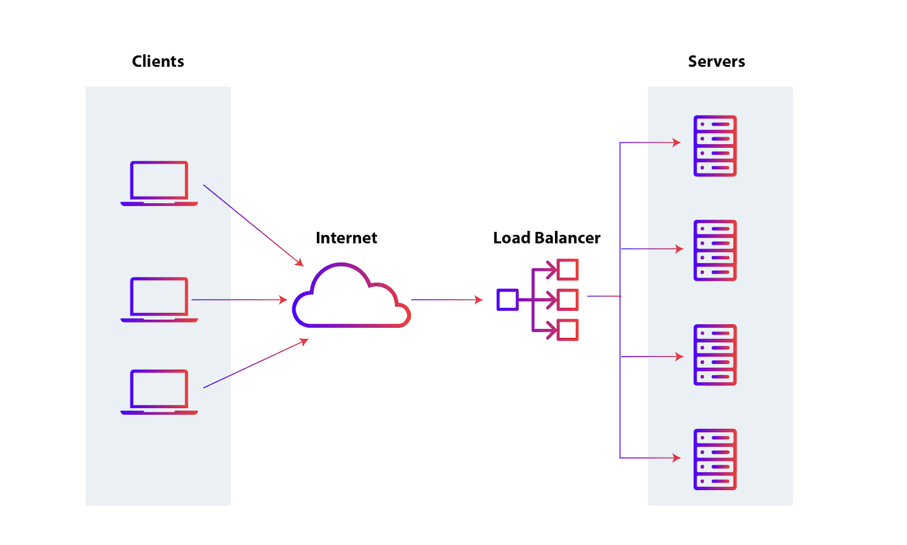

Preliminaries about Distributed Systems Engineering
Distributes Systems — Module 2
A.Y. 2024/2025
Giovanni Ciatto
Compiled on: 2024-11-20 — printable version
What is a Distributed System?
Leslie Lamport (1987)
A distributed system is one in which the failure of a computer you didn’t even know existed can render your own computer unusable
Interpretation
- hidden interdependencies between machines
- how a failure in one part of the system can have unforeseen consequences elsewhere
“Distributed Systems”, Tannenbaum and Van Steen (the book here)
A distributed system is a collection of independent computers that appears to its users as a single coherent system
Interpretation
- illusion of a unified system…
- … despite the fact that it is made up of multiple independent machines
- the key idea is that users may NOT be aware that the system is distributed
“Distributed Systems — Concepts and Design”, Coulouris et. al.
We define a distributed system as one in which hardware or software components located at networked computers communicate and coordinate their actions only by passing messages.
Interpretation
- reliance on message passing across a network for communication
[]“Concepts, Techniques, and Models of Computer Programming”, Van Roy and Haridi](https://webperso.info.ucl.ac.be/~pvr/VanRoyHaridi2003-book.pdf)
A distributed system is a set of computers that are linked together by a network
Interpretation
- very abstract definition focusing on how distribution should be interpreted
What is a Distributed System?
Wrap up
These definitions cover the essential characteristics of distributed systems:
- independent components
- communication via messages
- challenge of presenting a unified system to the user…
- … despite failures or complexities within the system
Why would you make your system distributed?
Any or some of the following reasons:
- Scalability: Handling large-scale systems efficiently
- Fault Tolerance and Availability: Ensuring reliability despite failures
- Low Latency and Geographical Distribution: Providing better user experience across the globe
- Resource Sharing: Efficiently using computing power and storage
- Handling Big Data: Processing data locally rather than moving it
- Parallelism: Speeding up tasks through concurrent execution
- Cost Efficiency: Reducing infrastructure costs through resource pooling
- Collaboration: Enabling real-time updates and interactions across distances
- The functionality to be provided by the system simply implies distribution
Example: Google Search
- Scalability: Google handles billions of searches every day
- Fault Tolerance and Availability: A single server cannot handle such a massive amount of data
- Low Latency and Geographical Distribution: By distributing the search process across thousands of servers worldwide, Google can deliver search results quickly and reliably
- Parallelism: Processing multiple search queries concurrently
Example: Social Networks (e.g., Instagram) or Messaging Apps (e.g., WhatsApp)
- Scalability: Millions of users are active at the same time
- Fault Tolerance and Availability: A single server cannot handle such a massive amount of data
- Low Latency : By distributing the service across multiple servers worldwide, the app can deliver messages quickly and reliably
- Geographical Distribution: Users can communicate across the globe
- Handling Big Data: Store users’ data within that user’s region (as per GDPR)
- Parallelism: Processing multiple messages concurrently
- Collaboration: Enabling real-time updates and interactions across distances
- The functionality is inherently distributed
Example: Online Shopping (e.g., Amazon)
- Scalability: Millions of users are active at the same time
- Fault Tolerance and Availability: A single server cannot handle such a massive amount of data
- Low Latency: By distributing the service across multiple servers worldwide, the app can deliver messages quickly and reliably
- Geographical Distribution: Comply to local regulations and regional preferences, e.g., language, currency, etc.
- Parallelism: Processing multiple orders concurrently
- The functionality to be provided by the system simply implies distribution
Example: Online Gaming (e.g., LoL, Fortnite)
- Scalability: Millions of users are active at the same time
- Fault Tolerance and Availability: A single server cannot handle such a massive amount of data
- Low Latency: By distributing the service across multiple servers worldwide, the app can deliver messages quickly and reliably
- Geographical Distribution: Users can play with others across the globe
- Parallelism: Processing multiple games concurrently
- Collaboration: Enabling real-time updates and interactions across distances
- The functionality to be provided by the system simply implies distribution
Example: Google Docs (et. similia)
- Scalability: allows for different business models, e.g., subscription-based
- Fault Tolerance and Availability: Allows for automatic, implicit updates / file saves / backups
- Geographical Distribution: Simplified sharing and collaboration across the globe
- Parallelism and Collaboration: Multiple users can edit the same document concurrently
Example: Federated Learning (e.g. Google’s Gboard)
- Scalability: Improve learning for all users (while keeping their data private)
- Geo-Distribution: Improve the functionality based on the data from different regions
- Handling Big Data: Process data locally rather than moving it
- Parallelism: Learning occurs on the user’s device, anywhere, at any time
- Cost Efficiency: A single device would not be sufficient to process all the data
- Resource Sharing: Efficiently using computing power and storage, while preserving privacy
How does the SE workflow change for distributed systems?
Recap: Software Engineering Workflow
-
Use case collection: negotiate expectations with customer(s) or stakeholders
-
Requirements analysis: produce a list of requirements the final product should satisfy
- with acceptance criteria for each requirement
-
Design: produce a blueprint of the software
- modelling: what entities from the real world are represented in the software?
- how do they behave? how do they interact?
- modelling: what entities from the real world are represented in the software?
-
Implementation: write the code that reifies the design into software
-
Verification: verify that the software meets the requirements
- automated testing: write more code to check whether the aforementioned implementation code works
- acceptance testing: test the system with real data and real users
-
Release: make one particular version of the software available to the customers
-
Deployment: install and activate the software for the software
-
Documentation: produce manuals and guides for the software
-
Maintenance: fix bugs, improve the software, adapt it to new requirements
Software Engineering Workflow for Distributed Systems
(only additional steps are listed)
- Use case collection:
- where are the users?
- when and how frequently do they interact with the system?
- how do they interact with the system? which devices are they using?
- does the system need to store user’s data? which? where?
- most likely, there will be multiple roles
Software Engineering Workflow for Distributed Systems
- Requirements analysis:
- most likely, answers to the questions above imply technical constrains on the system
- e.g. where to store data?
- in case of multiple data centers, how to keep them consistent?
- e.g. where to store data?
- will the system need to scale? how to handle faults? how to recover from failures?
- acceptance criteria will for all such additional requirements/constraints
- most likely, answers to the questions above imply technical constrains on the system
Software Engineering Workflow for Distributed Systems
- Design:
- are there infrastructural components that need to be introduced? how many?
- e.g. clients, servers, load balancers, caches, databases, message brokers, queues, workers, proxies, firewalls, CDNs, etc.
- how do components distribute over the network? where?
- e.g. what are the IP addresses of the servers / brokers / databases / etc.?
- how do domain entities map to infrastructural components?
- e.g. state of a video game on central server, while inputs/representations on clients
- e.g. where to store messages in an IM app? for how long?
- how do components communicate? what? which interaction patterns do they enact?
- do components need to store data? what data? where? when? how many copies?
- in case of network partition, should the system be available or consistent?
- how do components find each other?
- how to name components?
- e.g. service discovery, load balancing, etc.
- how do components recognize each other?
- e.g. authentication, authorization, etc.
- what should happen when a component fails? is it really a failure?
- e.g. retries, back-off, graceful degradation, etc.
- are there infrastructural components that need to be introduced? how many?
Software Engineering Workflow for Distributed Systems
- Implementation:
- which network protocols to use?
- e.g. UDP, TCP, HTTP, WebSockets, gRPC, XMPP, AMQP, MQTT, etc.
- how should in-transit data be represented?
- e.g. JSON, XML, YAML, Protocol Buffers, etc.
- how should persistent data be stored?
- e.g. relations, documents, key-value, graph, etc.
- how should databases be queried?
- e.g. SQL, NoSQL, etc.
- how should components be authenticated?
- e.g. OAuth, JWT, etc.
- how should components be authorized?
- e.g. RBAC, ABAC, etc.
- which network protocols to use?
Software Engineering Workflow for Distributed Systems
- Verification:
- how to unit-test distributed components?
- testing the integration among components is paramount
- how to end-to-end-test the system?
- e.g. production vs. test environment
- deployment automation is commonly used to test the system in production-like environment
Software Engineering Workflow for Distributed Systems
- Release:
- components may (and should) have their own release cycles and versions
- components should be resilient to the coexistence of multiple versions
- rolling updates are preferred over big bang updates
Software Engineering Workflow for Distributed Systems
- Deployment:
- where to deploy components?
- e.g. cloud, on-premises, hybrid?
- how to deploy components?
- e.g. containers, VMs, bare metal?
- how to scale components?
- e.g. horizontally, vertically, auto-scaling?
- how to monitor components?
- e.g. logs, metrics, traces?
- how to secure components?
- e.g. firewalls, encryption, certificates, etc.
- all such aspects should be automated
- tools and companies exist just for this!
- where to deploy components?
Software Engineering Workflow for Distributed Systems
- Documentation:
- protocols and data formats should be well-documented
- allowing for third-parties to create compatible components
- e.g. Web API specification is public for most Web services
- protocols and data formats should be well-documented
Software Engineering Workflow for Distributed Systems
- Maintenance:
- continuous monitoring of performance and availability
- tools and companies exist just for this!
- issues tracking is non-trivial (may require ad-hoc sub-systems)
- sunsetting old versions is crucial $\rightarrow$ coexistence of multiple versions
- End-of-Life should be scheduled, not abrupt
- continuous monitoring of performance and availability
Nomenclature
Infrastructure
The set of hardware, software, and networking facilities that allow the many pieces of a distributed system to communicate and inter-operate over a network
$\approx$ the set of infrastructural components composing the backbone of the distributed system
- Distributed systems may rely on similar infrastructures, regardless of the different functionalities they provide
- The infrastructure is transparent to the end-users, yet essential for the system to work
Example
Consider your fancy social network of choice (e.g., Instagram, TikTok, Twitter, etc.)
- it looks like a dashboard on you phone / computer, but…
- … where are the data stored?
- … where are the messages after they have been sent but before they reach your phone?
- … where does information processing happen?
- different sorts of computations are performed on different infrastructural components, depending on their role in the system
Infrastructural Components
An infrastructural component consists of a software unit playing a precise role in the distributed system. The role depends on the purpose of the component in the system, and/or how it interacts.
software unit $\approx$ process (in the OS sense)
Examples
clients, servers, brokers, load balancers, caches, databases, queues, masters, workers, proxies, etc.
Synonyms
-
Node $\equiv$ an infrastructural component for which the role is not relevant
-
Peer $\equiv$ an infrastructural component for which the role is not specified
- because all components play the same role(s)
Clients and servers
-
Server $\equiv$ a component with a well-known name/address responding to requests coming from clients
- it’s the components that listens (waits) for remote requests
- commonly it exposes an interface ($\approx$ the requests it can answer to) to clients
-
Client $\equiv$ a component that sends requests to servers, waiting for responses
- it’s the components that initiates the interaction
- it may expose an interface to users on how to interact with the server
Proxy
-
Proxy $\equiv$ a server acting as a gateway towards another server
- it intercepts requests from clients and forwards them to the actual server
- it intercepts responses from the actual server and forwards them to the client
- it may cache responses to reduce the load on the server
-
A proxy performing caching is called a cache server (or just cache)
Load Balancer
- Load Balancer $\equiv$ a proxy distributing incoming requests among multiple servers
- according to some distribution policy:
- round-robin,
- least connections,
- least response time,
- etc.
- according to some distribution policy:
Broker
-
Broker $\equiv$ a server mediating the communication between producers and consumers of data (a.k.a. messages)
- it receives messages from producers and forwards them to (1 or more) consumers
- common assumption: consumers declare their interest in receiving messages
-
Producer $\equiv$ the component sending messages to producer(s) (via the broker)
-
Consumer $\equiv$ the component receiving messages from consumer(s) (via the broker)
-
The same component can be simultaneously a producer and a consumer
[Broker with] Queues
- Queue $\approx$ a data structure where messages are stored in a FIFO manner
- FIFO $\rightarrow$ messages are consumed in the order they were produced
- storage $\rightarrow$ messages are not lost if consumers are unavailable
Message oriented middleware (MOM)
-
MOM $\approx$ a sort of broker having multiple channels for messages
- messages involving the same topic are sent to the same channel
- consumers subscribe to channels
-
Topic $\equiv$ a label for messages, allowing
- producers to control which consumers receive the message
- consumers to filter messages they are interested in
- the broker to route messages to the correct consumers
-
Yes, most MOM technologies use queues to implement channels
Database

- Database $\equiv$ a server specialized in storing and retrieving data
- in three-tier architectures, the database is the third tier
- acting as a server for the server (which acts as a client w.r.t the database)
- in three-tier architectures, the database is the third tier
Master—Worker (a.k.a. Master—Slave, or Leader—Follower)
-
Master $\equiv$ a server coordinating the work of multiple workers
- it distributes the work among workers
- it collects the results from workers
-
Worker $\equiv$ a server executing the work assigned by the master
-
Common use cases:
- [master—worker] parallel computation
- [master—slave] replication of data
Interaction Patterns
An interaction pattern describes how different components (nodes, processes, etc.) communicate and coordinate their actions to achieve a common goal. These patterns define the flow of messages, responsibilities of participants, and the timing and sequencing of communications.
e.g. request-response, publish-subscribe, auction, _etc.
Key points
- Participants: we assume that there are $N \geq 2$ participants
- Roles: participants play well-defined roles, most commonly:
- initiator: the participant initiating the interaction
- responder: the participant waiting for some other participant to initiate the interaction
- Messages: information exchanged among participants, most commonly containing at least:
- payload: the actual content of the message
- metadata: information about the message, e.g. source, destination, timestamp, conversation id, etc.
How to represent Interaction Patterns?
- Sequence diagrams: visual representation of the flow of messages between participants
- time is vertical, participants are horizontal
- arrows represent messages sent from one participant to another
- lifelines represent the lifetime of a participant

Hints
- see explanation at https://www.uml-diagrams.org/sequence-diagrams.html
- use PlantUML to automatically generate sequence diagrams from textual descriptions
- many Web-based picture generators, e.g. http://www.plantuml.com/plantuml
How to represent Interaction Patterns?
- Message flow graphs: visual representation of the flow of messages
- each node represents a type of message (e.g. request, response, notification, etc.)
- each directed edge represents an admissible reply to a message
- the graph may contain cycles, if the pattern allows for repeated interactions, or resets
- nodes may be represented in different colours/shapes depending on which role sends/receives the message
Hints
How to represent Interaction Patterns?
- State diagrams (a.k.a. state machines): visual representation of the internal state transitions of a participant
- each state represents a condition of the participant (e.g. before/after a message is sent/received)
- each transition represents an event that changes the state of the participant
- most commonly, a message reception or sending
- initial and final states are special states representing the start and end of the interaction
- most commonly, there’s one state diagram per participant
Hints
- use PlantUML to automatically generate state diagrams from textual descriptions
Which representation to use?
- The three representations are complementary
- So you should use them together to fully describe an interaction pattern
Further representations may be welcome
- FIPA’s AUML (Agent UML) for agent-based systems
- BPMN (Business Process Model and Notation) for business processes
- UML’s Activity Diagrams
Common Interaction Protocols (pt. 1)
Request—Response
The most common and basic pattern for communication between two components
hide footbox participant Client participant Server
Client -> Server: Request Server -> Client: Response
- 2 roles: client and server
- 2 sorts of messages: request and response
- each request is followed by one response
- client is the initiator, server is the responder
- client sends the request, server sends the response
- client waits for the response, server waits for the request
- often used to realise:
- remote procedure calls (RPC)
- remote method invocations (RMI)
- (web) services
Common Interaction Protocols (pt. 2)
Publish—Subscribe
A simple pattern to spread information among multiple recipients
hide footbox actor User participant Publisher participant Subscriber1 participant Subscriber2
== Subscription Phase == Subscriber1 -> Publisher: subscribe activate Publisher Publisher –> Subscriber1: confirmation deactivate Publisher
Subscriber2 -> Publisher: subscribe activate Publisher Publisher –> Subscriber2: confirmation deactivate Publisher
== Notification Phase == User –> Publisher: Event activate Publisher Publisher -> Subscriber1: notify Message Publisher -> Subscriber2: notify Message deactivate Publisher
- 2 roles: publisher and subscriber
- 2 sorts of messages: subscribe and notify
- 2 phases of interaction: subscription and notification
- Subscription phase: subscribers declare their interest in receiving message
- subscribers are initiators here
- Notification phase: publishers send messages to subscribers
- messages are broadcasted or multicasted depending on the implementation
- Subscription phase: subscribers declare their interest in receiving message
- messages of type notify carry messages, commonly representing events
- messages of type subscribe may carry topics, commonly representing the topic of interest (for the subscriber)
- notice that subscription is, essentially, a request-response pattern
Common Interaction Protocols (pt. 2)
Publish—Subscribe with Broker
Notice that the publisher here is acting as a broker
- one may re-design the pattern with explicit broker
- this is commonly useful to decouple the publisher from the subscribers
- most commonly, brokers store messages until they are consumed
hide footbox actor User participant Publisher participant Broker participant Subscriber1 participant Subscriber2 participant Subscriber3
== Subscription Phase == Subscriber1 -> Broker: subscribe TopicA activate Broker Broker –> Subscriber1: confirmation deactivate Broker
Subscriber2 -> Broker: subscribe TopicA activate Broker Broker –> Subscriber2: confirmation deactivate Broker
Subscriber3 -> Broker: subscribe TopicB activate Broker Broker –> Subscriber3: confirmation deactivate Broker
== Notification Phase == User –> Publisher: Event activate Publisher Publisher -> Broker: publish Message\non TopicA deactivate Publisher activate Broker Broker -> Subscriber1: notify Message Broker -> Subscriber2: notify Message deactivate Broker
Common Interaction Protocols (pt. 2)
Unicast vs. Broadcast vs. Multicast
- Unicast: one-to-one communication
- Broadcast: one-to-all communication
- Multicast: one-to-many communication
- implies a selection criterion for the many
Common Interaction Protocols (pt. 3)
ContractNet Protocol
A simple protocol for auctions and negotiations
hide footbox participant Initiator participant Contractor1 participant Contractor2
== Call for Proposals == Initiator -> Contractor1: Call for Proposal (CFP) activate Initiator Initiator -> Contractor2: Call for Proposal (CFP)
== Proposal Submission == Contractor1 -> Initiator: Submit Proposal Contractor2 -> Initiator: Submit Proposal
== Proposal Evaluation == Initiator -> Initiator: Evaluate Proposals, choosing the best one
== Award Contract == Initiator -> Contractor1: Award Contract activate Contractor1 Contractor1 -> Initiator: Accept Contract
== Contract Execution == Contractor1 -> Initiator: Return Result deactivate Contractor1 deactivate Initiator
-
2 roles: initiator and contractor
-
5 sorts of messages: CFP, proposal, award, accept, result
-
4 phases of interaction:
- Call for Proposals: initiator broad- or multi-casts a request a CFP
- commonly defining a deadline + task request
- Proposal Submission: contractors submit proposals to initiator
- commonly containing estimated cost
- Proposal Evaluation: initiator evaluates proposals and chooses the best one
- Award Contract: initiator awards the contract to the chosen contractor
- the chosen contractor accepts the contract
- Contract Execution: contractor executes the contract and returns the result
- Call for Proposals: initiator broad- or multi-casts a request a CFP
-
not shown in the picture:
- lack of proposals (i.e. no contractor)
- no proposal chosen
- contractor may reject the contract
Common Interaction Protocols (pt. 4)
Foundation for Intelligent Physical Agents (FIPA)
- FIPA is a standardization body for agent-based systems
- Very rough analogy: agent $\approx$ distributed component in a distributed system
- FIPA has standardized many interaction protocols for agents
- e.g. contract net, request-response, subscription, auction, _etc.
- See http://www.fipa.org/repository/ips.php3
Architecture and Architectural Styles
(recall theory from Module 1’s M6 – Modelling Distributed Systems: Software & System Architectures)
Recap: Software Architecture vs. Architectural Style
- Roy Fielding (2000):
A software architecture is an abstraction of the run-time elements of a software system during some phase of its operation. […] It is defined by a configuration of architectural elements constrained in their relationships in order to achieve a desired set of architectural properties.
- Very roughly:
Architectural style $\approx$ patterns of architectures which are known to work in practice
Main architectural styles for distributed systems
- layered architectures
- object-based architectures
- event-based architectures
- shared data-space architectures
Architectural Styles in Practice (pt. 1)
Layered Architecture (concept)
-
Which infrastructural components?
- Each layer is a server (or a proxy) for the layer(s) above it
- Each layer is a client for the layer(s) below it
-
Which interaction patterns?
- Request—Response: (a.k.a. remote procedure call, RPC)
- upper layers issue requests to lower layers
- lower layers issue responses to upper layers
- sometimes, Publish—Subscribe:
- upper layers subscribe to lower layers
- lower layers notify upper layers
- Request—Response: (a.k.a. remote procedure call, RPC)
-
Constraints:
- no cycles among layers
- i.e. lower layers_ should not contact upper layers
- no cycles among layers
-
Example: (Web Services)
- Skyscanner (looks for flights / hotels)
- relying on the Web services of airlines / hotels
- relying on the Booking portal
- all of which have their own layered architecture
- Skyscanner (looks for flights / hotels)
Architectural Styles in Practice (pt. 1)
Layered Architecture (particular cases)
Three-Tier Architecture
- Presentation Tier: responsible for presenting information to the user, and accepting user input
- Application Tier: responsible for processing user requests, and executing business logic, updating system state
- Data Tier: responsible for storing and retrieving data, and managing data access, persisting system state
Architectural Styles in Practice (pt. 1)
Layered Architecture (particular cases)
Hexagoal Architecture
cf. https://en.wikipedia.org/wiki/Hexagonal_architecture_(software)
Architectural Styles in Practice (pt. 1)
Layered Architecture (analysis)
Pros
-
Separation of Concerns: each layer handles a specific responsibility, making the system easier to understand and maintain.
-
Modularity: layers are independent, allowing easier updates, testing, and replacement without affecting the entire system.
-
Reusability: common functionality in layers can be reused across different systems or projects.
-
Scalability: the system can scale by modifying or optimizing individual layers (e.g., scaling the database or network layer independently).
-
Maintainability: bugs or issues can be isolated to specific layers, making troubleshooting simpler.
-
Abstraction: layers provide clear abstractions, allowing higher layers to interact with the system without needing to know the internal details of lower layers.
-
Interoperability: a well-defined interface between layers promotes compatibility and enables the use of different technologies in each layer.
Architectural Styles in Practice (pt. 1)
Layered Architecture (analysis)
Cons
-
Performance Overhead: multiple layers can introduce latency, especially if there are excessive data transformations or processing between layers.
-
Complexity in Design: designing and managing multiple layers can increase overall system complexity, particularly in very large systems.
-
Rigid Structure: strict layer separation can limit flexibility, making it harder to implement cross-cutting concerns (e.g., logging, security) efficiently.
-
Duplication of Functionality: if layers are not carefully defined, functionality can be duplicated across layers, leading to inefficiencies.
-
Potential for Over-Engineering: in smaller or simpler systems, using a layered architecture might introduce unnecessary complexity when simpler architectures would suffice.
-
Difficulty in Layer Communication: strict adherence to layer boundaries might make certain interactions cumbersome, requiring unnecessary intermediate steps.
Architectural Styles in Practice (pt. 1)
Layered Architecture (analysis)
Personal Opinion of the Teacher
- Layered architectures are simple and easy to understand
- It works well in most cases, you can consider it the default choice
- Prefer:
- two-tier (3-tier with no real DBMS) architectures for quick and dirty systems
- three-tier architectures for if flexibility is not a primary concern
- hexagonal architectures for systems that may need to scale in complexity
Architectural Styles in Practice (pt. 2)
Object-Based Architecture (concept)
-
Which infrastructural components?
- each is object simultaneously a client and a server for other objects
-
Which interaction patterns?
- Request—Response: (a.k.a. remote method invocation, RMI)
- objects issue requests to other objects
- other objects respond
- Request—Response: (a.k.a. remote method invocation, RMI)
-
Constraints:
- basically none
-
Examples:
Architectural Styles in Practice (pt. 2)
Object-Based Architecture (analysis)
Pros
-
Encapsulation: objects encapsulate data and behaviour, making the system more modular and easier to maintain.
-
Reusability: objects can be reused across different parts of the system or in different applications, reducing duplication of code.
-
Modularity: components are independent and self-contained, allowing easier upgrades, testing, and maintenance.
-
Clear Interface Definition: objects interact through well-defined interfaces, making it easier to manage dependencies and interactions between components.
-
Flexibility: objects can be distributed across different nodes, enabling flexibility in deployment and scalability in a distributed system.
-
Language Agnosticism (e.g., CORBA): some object-based systems (like CORBA) support multi-language environments, allowing developers to use the best language for each component while maintaining system integration.
-
Dynamic Behaviour: objects can be created, modified, or destroyed dynamically, allowing more flexible and adaptive systems.
Architectural Styles in Practice (pt. 2)
Object-Based Architecture (analysis)
Cons
-
Performance Overhead: the communication between distributed objects, especially over a network, can introduce significant latency and performance overhead.
-
Complexity in Management: managing the lifecycle and communication of distributed objects can add complexity, particularly in handling object references, synchronization, and failure recovery.
-
Difficulty in Debugging: debugging distributed objects is more complex due to the separation between client and server objects, especially when communication spans across different networks or systems.
-
Scalability Limitations: while object-based systems are modular, they may not scale efficiently in very large systems due to the overhead of managing object communication and state.
-
Security Concerns: distributed objects expose interfaces that can be exploited if not secured properly, making security management more challenging.
-
Tight Coupling through Interfaces: objects often rely on specific interfaces, which can lead to tight coupling between components, reducing flexibility in modifying or replacing objects.
-
State Management: maintaining the state of distributed objects can be complex, especially in cases of network failures or when objects need to be synchronized across multiple nodes.
Architectural Styles in Practice (pt. 2)
Object-Based Architecture (analysis)
Personal Opinion of the Teacher
- Object-based architectures were a thing in the 90s and early 2000s
- They never really took off, and are now mostly legacy
- OOP is good for developing individual components, where objects share the same address space
- Inter-object interactions are so fine-grained and intertwined in OOP that adding network in between makes it unmanageable
- Just don’t use this when designing a new system
Architectural Styles in Practice (pt. 3)
Event-Based Architecture (concept)
-
Which infrastructural components?
- event bus $\approx$ a broker for events OR a set of brokers with a routing mechanism
- servers are producers and consumers of events
- clients commonly just interact with servers, as in layered architectures
-
Which interaction patterns?
- Request—Response: client $\leftrightarrow$ server
- Publish-Subscribe: server $\leftrightarrow$ event bus
-
Constraints:
- servers do not really know each other…
- … they just know which event to react to or to produce
-
Remarks:
- much used in the industry to create modular systems
- where modules are realised in different moments/technologies
- much used in the industry to create modular systems
Architectural Styles in Practice (pt. 3)
Event Based Architecture (analysis)
Pros
-
Scalability: event-driven systems can scale more easily as components are decoupled and can handle many events concurrently.
-
Real-time Processing: events are processed as they happen, enabling real-time responses and immediate actions.
-
Loose Coupling: components are loosely coupled, improving flexibility and allowing independent service updates without affecting the whole system.
-
Resilience: fault tolerance is improved, as event producers and consumers are decoupled, reducing the risk of single points of failure.
-
Asynchronous Communication: systems can handle tasks asynchronously, improving responsiveness and system performance.
Architectural Styles in Practice (pt. 3)
Event Based Architecture (analysis)
Cons
-
Complexity: event-driven systems can be more complex to design, implement, and maintain, particularly with large-scale event flows.
-
Debugging Challenges: tracking the flow of events and identifying issues can be difficult, especially in distributed systems with asynchronous operations.
-
Event Ordering: ensuring the correct order of event processing can be challenging, especially in distributed systems with multiple consumers.
-
Latency: while events are often processed in real-time, network latency or communication issues can delay event delivery or processing.
-
Data Consistency: ensuring consistency across different services or systems can be harder in event-driven systems due to asynchronous processing.
-
Single point of failure: if the event hub is not properly managed (e.g., no fault-tolerant mechanisms), system may become faulty or unavailable.
Architectural Styles in Practice (pt. 3)
Event Based Architecture (analysis)
Personal Opinion of the Teacher
- Event-based architectures are very popular in the industry
- They are also pretty complex to design and implement: not at all entry level
- Future courses in this master programme will cover this in more detail
- Understanding of how layered architectures work is a good starting point for event-based architectures
- also because the two styles are often combined
Architectural Styles in Practice (pt. 4)
Shared Dataspace Architecture (concept)
-
Which infrastructural components?
- clients and databases
-
Which interaction patterns?
- Request—Response: client reads/writes data from/to database
- Publish-Subscribe:
- support for asynchronous notifications of data changes
- support for streaming big query results
-
Constraints:
- clients only perform CRUD operations on the database
-
Examples:
- Oracle’s JavaSpaces
- IBM’s TSpaces
- GigaSpaces’s XAP
Architectural Styles in Practice (pt. 4)
Shared Dataspace Architecture (analysis)
Pros
-
Decoupled Communication: clients do not need to interact directly, allowing for more flexible and asynchronous communication.
-
Simplified Coordination: by using a shared space, different processes can coordinate without knowing about each other, simplifying synchronization in distributed systems.
-
Scalability: components can be added or removed from the system without affecting others, making the architecture inherently scalable.
-
Fault Tolerance: since communication happens through a shared space, if one component fails, others can still operate, improving resilience.
-
Loose Coupling: different parts of the system are loosely coupled through the shared data space, enabling more flexibility in how the system components interact.
-
Asynchronous Processing: processes can post data to the space and move on without waiting for others to consume it, improving system responsiveness and throughput.0
Architectural Styles in Practice (pt. 4)
Shared Dataspace Architecture (analysis)
Cons
-
Performance Overhead: accessing a shared space, particularly in a distributed environment, can introduce latency and performance bottlenecks.
-
Data Consistency Challenges: ensuring consistency between the data posted in the shared space and its consumers can be difficult, especially with concurrent access.
-
Concurrency Issues: managing multiple processes accessing or modifying the same shared data can lead to race conditions and other concurrency issues.
-
Limited Visibility: because of the decoupled nature of the system, it can be harder to track or debug the flow of data and interactions between components.
-
Complexity in Data Management: house-keeping the shared data space (e.g., cleaning up outdated data, managing space, etc.) adds additional complexity to the system.
-
Single point of failure: if the shared space is not properly managed (e.g., no fault-tolerant mechanisms), data may be lost if the space fails or system may become completely unavailable.
Architectural Styles in Practice (pt. 4)
Event Based Architecture (analysis)
Personal Opinion of the Teacher
- Shared dataspace architectures only make sense in few niches
- e.g. in distributed data processing, where computational burdens are shared among many nodes
- e.g. when the distributed systems’ state is shared among most/all nodes, and concurrent updates are necessary
- such as in distributed databases or distributed file systems, or in non-real-time multiplayer video games
Features Impacting DS Design
These features impact the infrastructure, interaction patterns, or architecture of DS:
-
Redundancy: data, services, or hardware are replicated across multiple nodes or servers to ensure availability in case of failure.
-
Failover: when a primary node or service fails, a backup (secondary node) takes over.
-
Checkpoints and Rollback Recovery: periodically saving the state of a process so that in case of failure, the system can roll back to the last known good state.
-
Consensus: achieving agreement between distributed nodes, ensuring consistent decision-making, even in case of failures.
-
Hearth-beats: periodic signals sent between nodes to ensure they are alive and responsive.
-
Timeouts and Retries: setting timeouts for operations and retrying them in case of failure or unresponsiveness.
-
Authorization and Authentication: ensuring that only authorized users or systems can access data or services.
-
Data Partitioning: splitting data across multiple nodes to improve performance and scalability, or respect administrative constraints.
About Redundancy
What
- Data: making copies of the data across multiple nodes
- Services: deploying multiple instances of the same service across different nodes
- Hardware: using multiple computers, storage devices, or network components
Why
- Fault Tolerance: ensures that the system remains operational even if some components fail
- also avoiding data loss
- Availability: distributing the load across multiple nodes, reducing the load on each node
- Scalability: easier to scale the system up/down when the load increases/decreases
How
- Replication: copying data or services across multiple nodes
- [Data] Sharding : splitting data into smaller parts and distributing them across multiple nodes
- when all nodes have all data, it’s called replication…
- … when each node has only a part of the data, it’s called sharding
Implications
- Data replication $\Rightarrow$ consistency issues $\Rightarrow$ consensus algorithms OR master—slave replication
- Service replication $\Rightarrow$ load balancing issues $\Rightarrow$ more complex infrastructure
- Service replication $\Rightarrow$ state management issues $\Rightarrow$ state-less server + stateful database
About Failover
What
-
Active-passive failover: the backup node become active when the primary fails
-
Active-active failover: all replicas are active, and traffic is rerouted in case of failure
Why
- Fault Tolerance and Availability: ensures that the system remains operational even the component fail
How
- Load-balancer or proxy to reroute traffic to the backup node(s)
Implications
- Same as in service replication
- Need for a mechanism to detect failures, e.g. hear-beats (see next slides)
About Checkpoints and Rollback Recovery
What
- Checkpoints: saving the state of a process at regular intervals
- this is similar to backups, but it’s most commonly automatic
- Rollback Recovery: in case of failure, the system can roll back to the last known good state
- again, stress on the automatic part
Why
- Fault Tolerance: it may be hard to prevent some bad situation from happening, so this is a way to recover from it when it does
How
- by designing your system to be able snapshot its state & restore snapshots upon failures automatically
- by designing your system to track variations (rather than states) and compute the states from the variations
- e.g. Command Query Responsibility Segregation (CQRS)
Implications
- Requires ad-hoc modelling, architectural, and infrastructural decisions
About Consensus
What
- A protocol to ensure that some nodes (most commonly servers or databases) in a DS agree on a common decision
- decision could be “which operation to perform on data” or “who to elect as a leader”, etc
- even in case of failures
- e.g. crashes: one node stops responding
- e.g. byzantine failures: one node sends wrong information (either by mistake or deliberately)
Why
- Consistency: ensures that nodes in the system have the same view of the data
- Fault Tolerance: ensures that the system can continue to operate even if some nodes fail
- Data Redundancy: see previous slides
How
- Byzantine Fault Tolerant (BFT) protocols, e.g. PBFT
- Crash Fault Tolerant protocols, e.g. Paxos, Raft
Implications
- Complexity: design is more complex, e.g. clients may need to know which replica(s) to contact
- Latency: in the eyes of clients, due to consensus going on between request and response
About Heart-beats, Timeout, Retries
What
- Heart-beats are periodic signals sent between nodes to ensure they are alive and responsive
- if a node stops sending heart-beats within the period, it’s considered dead
- signal $\approx$ (almost) empty message: only its reception matter
- Timeout: amount of time necessary to locally mark a remote operation as failed (e.g. node as unreachable)
- Retry: commonly a single failure not enough (e.g. short timeout, bad luck) so better to retry a few times
- max retries: maximum amount of retries before considering an actual failure
- delay: amount of time to wait before retrying again (may be variable, cf. exponential back-off)
Why
- Fault Tolerance: basic mechanism to detect failures, to be able to react to them ASAP
How
- Nodes keep a connection open between them, and send data periodically
- alternatively, they send each other messages with no connection
- some application may have this feature built-in, others may need ad-hoc design
- Timeout + retrial threshold + retrial delay to mark nodes as unreachable
- Decide what to do when depending on which and how many nodes are unreachable
- e.g. prioritize consistency? prioritize availability?
Implications
- More complex (and robust) design and implementation
- Note: this is useful also when reliable network protocols (e.g. TCP) are in place
About Authorization and Authentication
What
-
Authentication: letting the nodes of a DS recognise and distinguish themselves from one another
- this includes users’ clients (a.k.a. identifying the legitimate users of the system)
-
Authorization: a server granting (or forbidding) access to resources depending on the identity / role of the authenticated client
Why
- Access control: to control who can (or cannot) do what
- Monitoring: to record who is doing what
- Prerequisite for many cyber-security-related aspects
How
- Allow the system to register legitimate users and/or roles, endowing them with credentials
- One or more server is in charge of generating session tokens upon client request
- Authenticated nodes include session tokens in any subsequent interaction
- Nodes know how to verify session tokens are valid and genuine
- Nodes enforce access control depending on the content of the token
Implications
About Data Partitioning
What
- Clones of the same functionality are deployed, each one covering a partition of the geographic region where the system operates
- e.g. amazon**.uk** vs. amazon**.it**, google**.fr** vs. google*.com**, etc.
- Clones are not consistent among each other, because data is partitioned on a geographical basis
- mechanisms are in place to direct users towards closest partition
Why
- Fault-tolerance: one fault in one region does not propagate to others region
- Availability and Load-balancing: divide-and-conquer approach to serve users
- It is sometimes a mandatory accomplishment due to regulations (cf. GDPR, art. 44)
How
- The same infrastructure is deployed in different places
- Mechanisms may be present to connect the clones of the system (hence hiding partitioning to users)
Implications
- Deployment procedures should be reproducible and parametric, possibly automated
- Clones should be designed to be aware of the existence of other clones
Lecture is Over
Compiled on: 2024-11-20 — printable version